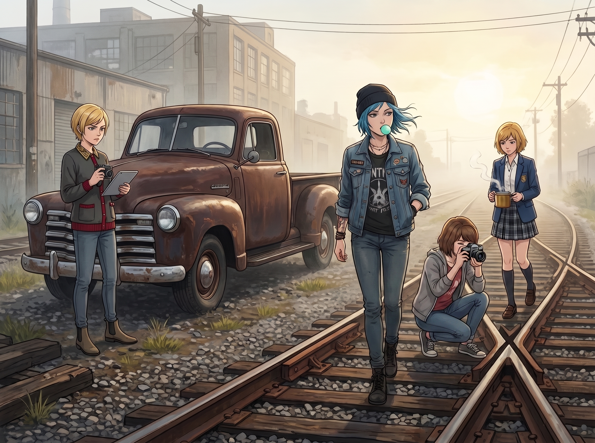

選址

清晨八點半，波特蘭東區的舊工業鐵道旁泛著薄薄的晨霧。
那輛深褐色的老雪佛蘭皮卡發出低沉而有力的轟鳴，碾過碎石路和廢棄的枕木，穩穩停在了一條長滿野燕麥的支線盡頭。
四個人從車上下來。Chloe 嘴裡嚼著薄荷糖，大步流星地走在最前面，藍髮在晨風中肆意飄揚；Max 脖子上掛著機械相機，正忙著對焦晨光下泛著鐵鏽的道岔；Kate 提著一壺溫熱的草本茶，小心翼翼地避開腳下的野草；而 Victoria 則踩著一雙罕見的平底切爾西短靴，手裡拿著雷射測距儀與平板電腦，眉頭緊蹙地打量著四周。
停在雜草深處的，是一節 1950 年代太平洋鐵路的重型鋼製守車，外加半截連通的舊貨運悶罐車廂。
車身原本的深紅色油漆早已斑駁，露出了歲月打磨出的暗褐色鐵鏽，但厚實的鉚接鋼骨架依然筆挺堅固，兩側高高的觀景凸窗在晨光中反射著微光。
「就是這裡了，諸位，」Chloe 一手叉腰，一手豪邁地指向那節巨型鋼鐵怪物，語氣裡滿是狂熱與驕傲，「未來『價格車庫·機械與手作工坊』的旗艦總部！」
「老天……Price，妳的浪漫主義裡永遠少不了破傷風的風險。」Victoria 用指尖推了推墨鏡，踩著鐵梯走上車廂踏板，手裡的測距儀打出一道紅色光點，「不過……長度 14 米，內部挑高 3.2 米，主承重鋼樑完好無損，頂部天窗的自然採光角度比我想像的要好得多。」
Chloe 抓著生鏽的鐵把手，用力一拉，伴隨著「吱呀——哐當」一聲沉重粗獷的金屬摩擦聲，厚重的車廂滑門被轟然拉開。
陽光瞬間斜斜地切入昏暗的車廂內部，無數微小的塵埃在金色光柱中緩緩浮動。
四個人走進空曠的車廂，踩在堅硬的橡木地板上，發出空曠而扎實的腳步聲。
「這裡簡直是個完美的空間，」Max 站在觀景窗下，端起相機，透過取景器看著光影的切割，眼底滿是興奮，「靠東南的這面窗戶可以改造成暗房操作台，早晨的光線剛好能給外面的金屬展覽區補光！」
「我可以在車廂外面的空地和鐵軌旁種上一整排向日葵、薰衣草和耐旱的百里香，」Kate 趴在窗沿上，望著外面荒廢但充滿野性生機的草地，溫柔地比劃著，「再用廢舊枕木搭一個小花架，來諮詢的孩子們一定會喜歡這裡。」
Chloe 站在車廂中央，雙手插在工裝褲口袋裡，環視著這個空曠卻充滿無限可能性的鋼鐵空間，嘴角揚起了最肆意、最真實的笑容。
她轉過身，看向站在車門旁正低頭在平板上快速標註空間分區的 Victoria、拿著相機捕捉塵埃光影的 Max，以及正在規劃植物角的 Kate。
「看來，」Chloe 挑起眉毛，朝著 Victoria 伸出一隻戴著無指皮手套的右手，「Chase 投資人，第一期改造合約，要正式生效了嗎？」
Victoria 抬起頭，將平板夾在腋下，摘下墨鏡，嘴角勾起一抹極具自信與優雅的弧度。她伸出戴著戒指的手，毫不猶豫地握住了 Chloe 那隻粗糙卻有力的手：
「簽約愉快，Price 工匠。如果六個月後這裡不能成為波特蘭東區最先鋒的獨立工坊，我會親手拆了妳的招牌。」
「咔嚓——」
Max 在一旁迅速按下了快門。
晨光將車廂內四個女孩的身影拉得很長很長，鐵鏽、塵埃、陽光與草木的香氣在此刻徹底交融。屬於她們的全新據點，在這條曾經荒廢的舊鐵道上，正式敲響了啟程的汽笛。